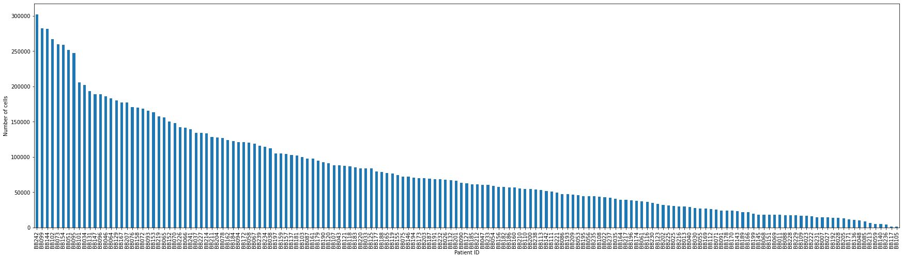
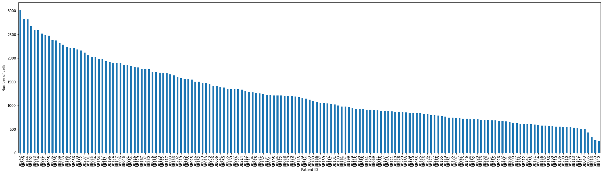
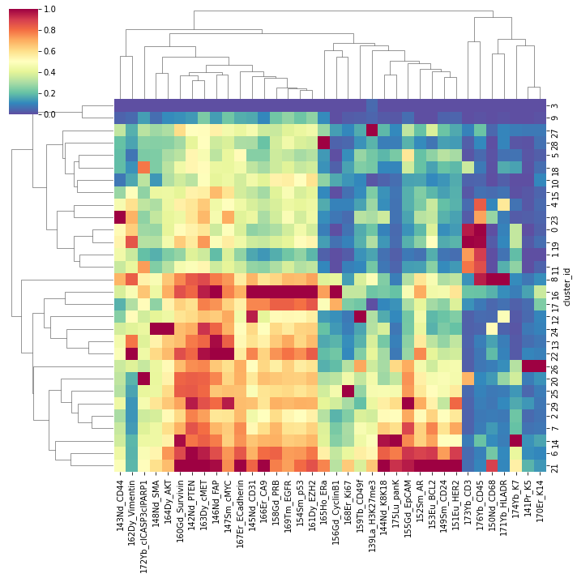

<!DOCTYPE html>
<html class="writer-html5" lang="en" >
<head>
  <meta charset="utf-8" /><meta name="generator" content="Docutils 0.17.1: http://docutils.sourceforge.net/" />

  <meta name="viewport" content="width=device-width, initial-scale=1.0" />
  <title>scQUEST: Downsampling and Clustering &mdash; scQUEST  documentation</title>
      <link rel="stylesheet" href="_static/pygments.css" type="text/css" />
      <link rel="stylesheet" href="_static/css/theme.css" type="text/css" />
  <!--[if lt IE 9]>
    <script src="_static/js/html5shiv.min.js"></script>
  <![endif]-->
  
        <script data-url_root="./" id="documentation_options" src="_static/documentation_options.js"></script>
        <script src="_static/jquery.js"></script>
        <script src="_static/underscore.js"></script>
        <script src="_static/doctools.js"></script>
    <script src="_static/js/theme.js"></script>
    <link rel="index" title="Index" href="genindex.html" />
    <link rel="search" title="Search" href="search.html" />
    <link rel="next" title="scQUEST package" href="scQUEST_api/scQUEST.html" />
    <link rel="prev" title="Process FCS files and Create AnnData Object" href="process-fcs-files-and-create-annData-object.html" /> 
</head>

<body class="wy-body-for-nav"> 
  <div class="wy-grid-for-nav">
    <nav data-toggle="wy-nav-shift" class="wy-nav-side">
      <div class="wy-side-scroll">
        <div class="wy-side-nav-search" >
            <a href="index.html" class="icon icon-home"> scQUEST
          </a>
<div role="search">
  <form id="rtd-search-form" class="wy-form" action="search.html" method="get">
    <input type="text" name="q" placeholder="Search docs" />
    <input type="hidden" name="check_keywords" value="yes" />
    <input type="hidden" name="area" value="default" />
  </form>
</div>
        </div><div class="wy-menu wy-menu-vertical" data-spy="affix" role="navigation" aria-label="Navigation menu">
              <ul class="current">
<li class="toctree-l1"><a class="reference internal" href="installation.html">Installation</a></li>
<li class="toctree-l1"><a class="reference internal" href="overview.html">Overview</a></li>
<li class="toctree-l1 current"><a class="reference internal" href="tutorials.html">Tutorials</a><ul class="current">
<li class="toctree-l2"><a class="reference internal" href="scQUEST_tutorial.html">scQUEST Tutorial</a></li>
<li class="toctree-l2"><a class="reference internal" href="scQUEST_AML_tutorial.html">scQUEST AML Tutorial</a></li>
<li class="toctree-l2"><a class="reference internal" href="Custom_models.html">Custom Models, Training &amp; Data Loaders</a></li>
<li class="toctree-l2"><a class="reference internal" href="process-fcs-files-and-create-annData-object.html">Process FCS files and Create AnnData Object</a></li>
<li class="toctree-l2 current"><a class="current reference internal" href="#">scQUEST: Downsampling and Clustering</a></li>
</ul>
</li>
<li class="toctree-l1"><a class="reference internal" href="scQUEST_api/scQUEST.html">API</a></li>
<li class="toctree-l1"><a class="reference internal" href="references.html">References</a></li>
</ul>

        </div>
      </div>
    </nav>

    <section data-toggle="wy-nav-shift" class="wy-nav-content-wrap"><nav class="wy-nav-top" aria-label="Mobile navigation menu" >
          <i data-toggle="wy-nav-top" class="fa fa-bars"></i>
          <a href="index.html">scQUEST</a>
      </nav>

      <div class="wy-nav-content">
        <div class="rst-content">
          <div role="navigation" aria-label="Page navigation">
  <ul class="wy-breadcrumbs">
      <li><a href="index.html" class="icon icon-home"></a> &raquo;</li>
          <li><a href="tutorials.html">Tutorials</a> &raquo;</li>
      <li>scQUEST: Downsampling and Clustering</li>
      <li class="wy-breadcrumbs-aside">
            <a href="_sources/tutorial_on_downsampling_and_clustering.md.txt" rel="nofollow"> View page source</a>
      </li>
  </ul>
  <hr/>
</div>
          <div role="main" class="document" itemscope="itemscope" itemtype="http://schema.org/Article">
           <div itemprop="articleBody">
             
  <section id="scquest-downsampling-and-clustering">
<h1>scQUEST: Downsampling and Clustering<a class="headerlink" href="#scquest-downsampling-and-clustering" title="Permalink to this headline"></a></h1>
<p>In this tutorial we show how to subsample and cluster the full 13million cell breast cancer dataset used in the basic scQUEST tutorial.</p>
<div class="highlight-python notranslate"><div class="highlight"><pre><span></span>!pip install scanpy
!pip3 install leidenalg
</pre></div>
</div>
<div class="highlight-none notranslate"><div class="highlight"><pre><span></span>Requirement already satisfied: scanpy in /usr/local/Caskroom/miniconda/base/envs/scquest/lib/python3.8/site-packages (1.9.1)
Requirement already satisfied: anndata&gt;=0.7.4 in /usr/local/Caskroom/miniconda/base/envs/scquest/lib/python3.8/site-packages (from scanpy) (0.8.0)
Requirement already satisfied: numpy&gt;=1.17.0 in /usr/local/Caskroom/miniconda/base/envs/scquest/lib/python3.8/site-packages (from scanpy) (1.22.4)
Requirement already satisfied: pandas&gt;=1.0 in /usr/local/Caskroom/miniconda/base/envs/scquest/lib/python3.8/site-packages (from scanpy) (1.4.2)
Requirement already satisfied: networkx&gt;=2.3 in /usr/local/Caskroom/miniconda/base/envs/scquest/lib/python3.8/site-packages (from scanpy) (2.8.2)
Requirement already satisfied: scikit-learn&gt;=0.22 in /usr/local/Caskroom/miniconda/base/envs/scquest/lib/python3.8/site-packages (from scanpy) (1.1.1)
Requirement already satisfied: patsy in /usr/local/Caskroom/miniconda/base/envs/scquest/lib/python3.8/site-packages (from scanpy) (0.5.2)
Requirement already satisfied: natsort in /usr/local/Caskroom/miniconda/base/envs/scquest/lib/python3.8/site-packages (from scanpy) (8.1.0)
Requirement already satisfied: joblib in /usr/local/Caskroom/miniconda/base/envs/scquest/lib/python3.8/site-packages (from scanpy) (1.1.0)
Requirement already satisfied: statsmodels&gt;=0.10.0rc2 in /usr/local/Caskroom/miniconda/base/envs/scquest/lib/python3.8/site-packages (from scanpy) (0.13.2)
Requirement already satisfied: umap-learn&gt;=0.3.10 in /usr/local/Caskroom/miniconda/base/envs/scquest/lib/python3.8/site-packages (from scanpy) (0.5.3)
Requirement already satisfied: tqdm in /usr/local/Caskroom/miniconda/base/envs/scquest/lib/python3.8/site-packages (from scanpy) (4.64.0)
Requirement already satisfied: scipy&gt;=1.4 in /usr/local/Caskroom/miniconda/base/envs/scquest/lib/python3.8/site-packages (from scanpy) (1.8.1)
Requirement already satisfied: h5py&gt;=3 in /usr/local/Caskroom/miniconda/base/envs/scquest/lib/python3.8/site-packages (from scanpy) (3.7.0)
Requirement already satisfied: numba&gt;=0.41.0 in /usr/local/Caskroom/miniconda/base/envs/scquest/lib/python3.8/site-packages (from scanpy) (0.55.2)
Requirement already satisfied: matplotlib&gt;=3.4 in /usr/local/Caskroom/miniconda/base/envs/scquest/lib/python3.8/site-packages (from scanpy) (3.5.2)
Requirement already satisfied: packaging in /usr/local/Caskroom/miniconda/base/envs/scquest/lib/python3.8/site-packages (from scanpy) (21.3)
Requirement already satisfied: session-info in /usr/local/Caskroom/miniconda/base/envs/scquest/lib/python3.8/site-packages (from scanpy) (1.0.0)
Requirement already satisfied: seaborn in /usr/local/Caskroom/miniconda/base/envs/scquest/lib/python3.8/site-packages (from scanpy) (0.11.2)
Requirement already satisfied: python-dateutil&gt;=2.7 in /usr/local/Caskroom/miniconda/base/envs/scquest/lib/python3.8/site-packages (from matplotlib&gt;=3.4-&gt;scanpy) (2.8.2)
Requirement already satisfied: cycler&gt;=0.10 in /usr/local/Caskroom/miniconda/base/envs/scquest/lib/python3.8/site-packages (from matplotlib&gt;=3.4-&gt;scanpy) (0.11.0)
Requirement already satisfied: pyparsing&gt;=2.2.1 in /usr/local/Caskroom/miniconda/base/envs/scquest/lib/python3.8/site-packages (from matplotlib&gt;=3.4-&gt;scanpy) (3.0.9)
Requirement already satisfied: pillow&gt;=6.2.0 in /usr/local/Caskroom/miniconda/base/envs/scquest/lib/python3.8/site-packages (from matplotlib&gt;=3.4-&gt;scanpy) (9.1.1)
Requirement already satisfied: fonttools&gt;=4.22.0 in /usr/local/Caskroom/miniconda/base/envs/scquest/lib/python3.8/site-packages (from matplotlib&gt;=3.4-&gt;scanpy) (4.33.3)
Requirement already satisfied: kiwisolver&gt;=1.0.1 in /usr/local/Caskroom/miniconda/base/envs/scquest/lib/python3.8/site-packages (from matplotlib&gt;=3.4-&gt;scanpy) (1.4.2)
Requirement already satisfied: llvmlite&lt;0.39,&gt;=0.38.0rc1 in /usr/local/Caskroom/miniconda/base/envs/scquest/lib/python3.8/site-packages (from numba&gt;=0.41.0-&gt;scanpy) (0.38.1)
Requirement already satisfied: setuptools in /usr/local/Caskroom/miniconda/base/envs/scquest/lib/python3.8/site-packages (from numba&gt;=0.41.0-&gt;scanpy) (62.3.2)
Requirement already satisfied: pytz&gt;=2020.1 in /usr/local/Caskroom/miniconda/base/envs/scquest/lib/python3.8/site-packages (from pandas&gt;=1.0-&gt;scanpy) (2022.1)
Requirement already satisfied: threadpoolctl&gt;=2.0.0 in /usr/local/Caskroom/miniconda/base/envs/scquest/lib/python3.8/site-packages (from scikit-learn&gt;=0.22-&gt;scanpy) (3.1.0)
Requirement already satisfied: six in /usr/local/Caskroom/miniconda/base/envs/scquest/lib/python3.8/site-packages (from patsy-&gt;scanpy) (1.16.0)
Requirement already satisfied: pynndescent&gt;=0.5 in /usr/local/Caskroom/miniconda/base/envs/scquest/lib/python3.8/site-packages (from umap-learn&gt;=0.3.10-&gt;scanpy) (0.5.7)
Requirement already satisfied: stdlib-list in /usr/local/Caskroom/miniconda/base/envs/scquest/lib/python3.8/site-packages (from session-info-&gt;scanpy) (0.8.0)
Collecting leidenalg
  Downloading leidenalg-0.8.10-cp38-cp38-macosx_10_9_x86_64.whl (229 kB)
     ━━━━━━━━━━━━━━━━━━━━━━━━━━━━━━━━━━━━━ 229.9/229.9 kB 758.4 kB/s eta 0:00:001m577.9 kB/s eta 0:00:01
[?25hCollecting igraph&lt;0.10,&gt;=0.9.0
  Downloading igraph-0.9.10-cp38-cp38-macosx_10_9_x86_64.whl (1.8 MB)
     ━━━━━━━━━━━━━━━━━━━━━━━━━━━━━━━━━━━━━━━━ 1.8/1.8 MB 2.6 MB/s eta 0:00:00[31m2.7 MB/s eta 0:00:01
[?25hCollecting texttable&gt;=1.6.2
  Downloading texttable-1.6.4-py2.py3-none-any.whl (10 kB)
Installing collected packages: texttable, igraph, leidenalg
Successfully installed igraph-0.9.10 leidenalg-0.8.10 texttable-1.6.4
</pre></div>
</div>
<div class="highlight-python notranslate"><div class="highlight"><pre><span></span><span class="kn">import</span> <span class="nn">scQUEST</span> <span class="k">as</span> <span class="nn">scq</span>
<span class="kn">import</span> <span class="nn">matplotlib.pyplot</span> <span class="k">as</span> <span class="nn">plt</span>
<span class="kn">import</span> <span class="nn">seaborn</span> <span class="k">as</span> <span class="nn">sns</span>
<span class="kn">import</span> <span class="nn">pandas</span> <span class="k">as</span> <span class="nn">pd</span>
<span class="kn">import</span> <span class="nn">numpy</span> <span class="k">as</span> <span class="nn">np</span>
<span class="kn">import</span> <span class="nn">warnings</span>
<span class="kn">import</span> <span class="nn">anndata</span> <span class="k">as</span> <span class="nn">ad</span>
<span class="kn">from</span> <span class="nn">sklearn.preprocessing</span> <span class="kn">import</span> <span class="n">MinMaxScaler</span>
<span class="kn">import</span> <span class="nn">scanpy</span> <span class="k">as</span> <span class="nn">sc</span>

<span class="n">warnings</span><span class="o">.</span><span class="n">filterwarnings</span><span class="p">(</span><span class="s2">&quot;ignore&quot;</span><span class="p">)</span>
</pre></div>
</div>
<p>Load the full annData object (13,384,828 single-cell measurements of 68 channels). The patient id information is stored in <code class="docutils literal notranslate"><span class="pre">.obs[patient_number]</span></code>.</p>
<div class="highlight-python notranslate"><div class="highlight"><pre><span></span><span class="n">ad_raw</span> <span class="o">=</span> <span class="n">scq</span><span class="o">.</span><span class="n">dataset</span><span class="o">.</span><span class="n">breastCancerAtlasRaw</span><span class="p">()</span>

<span class="n">plt</span><span class="o">.</span><span class="n">figure</span><span class="p">(</span><span class="n">figsize</span><span class="o">=</span><span class="p">(</span><span class="mi">30</span><span class="p">,</span> <span class="mi">8</span><span class="p">))</span>
<span class="n">ad_raw</span><span class="o">.</span><span class="n">obs</span><span class="p">[</span><span class="s2">&quot;patient_number&quot;</span><span class="p">]</span><span class="o">.</span><span class="n">value_counts</span><span class="p">()</span><span class="o">.</span><span class="n">plot</span><span class="p">(</span><span class="n">kind</span><span class="o">=</span><span class="s2">&quot;bar&quot;</span><span class="p">)</span>
<span class="n">plt</span><span class="o">.</span><span class="n">xlabel</span><span class="p">(</span><span class="s2">&quot;Patient ID&quot;</span><span class="p">)</span>
<span class="n">plt</span><span class="o">.</span><span class="n">ylabel</span><span class="p">(</span><span class="s2">&quot;Number of cells&quot;</span><span class="p">)</span>
<span class="n">plt</span><span class="o">.</span><span class="n">show</span><span class="p">()</span>
</pre></div>
</div>
<p></p>
<p>As you can already see, the number of cells per patient vastly differs, with few patients having more than 200,000 cells and some others less than 5,000. To minimize this discrepancies, one can either sample a fixed number of cells per patient:</p>
<div class="highlight-python notranslate"><div class="highlight"><pre><span></span><span class="n">ad_sub</span> <span class="o">=</span> <span class="n">ad_raw</span><span class="p">[</span>
    <span class="n">ad_raw</span><span class="o">.</span><span class="n">obs</span><span class="o">.</span><span class="n">groupby</span><span class="p">(</span><span class="s2">&quot;patient_number&quot;</span><span class="p">)</span><span class="o">.</span><span class="n">sample</span><span class="p">(</span><span class="n">n</span><span class="o">=</span><span class="mi">1000</span><span class="p">,</span> <span class="n">random_state</span><span class="o">=</span><span class="mi">1</span><span class="p">)</span><span class="o">.</span><span class="n">index</span>
<span class="p">]</span>
</pre></div>
</div>
<p>Or perform a custom approach similar to the one described in (Wagner et al., 2019), which is a bit more involved. Here, we sample varying fractions of cells based on the total number of cells in that sample. As you see in the barplot, this results to a more balanced distribution of cells per sample.</p>
<div class="highlight-python notranslate"><div class="highlight"><pre><span></span><span class="n">counts</span> <span class="o">=</span> <span class="n">ad_raw</span><span class="o">.</span><span class="n">obs</span><span class="p">[</span><span class="s2">&quot;patient_number&quot;</span><span class="p">]</span><span class="o">.</span><span class="n">value_counts</span><span class="p">()</span><span class="o">.</span><span class="n">to_dict</span><span class="p">()</span>

<span class="c1"># perform a custom downsampling</span>
<span class="n">temp</span> <span class="o">=</span> <span class="p">[]</span>
<span class="k">for</span> <span class="n">i</span><span class="p">,</span> <span class="n">c</span> <span class="ow">in</span> <span class="n">counts</span><span class="o">.</span><span class="n">items</span><span class="p">():</span>
    <span class="k">if</span> <span class="n">c</span> <span class="o">&lt;</span> <span class="mi">2000</span><span class="p">:</span>
        <span class="n">temp</span><span class="o">.</span><span class="n">append</span><span class="p">(</span><span class="n">ad_raw</span><span class="o">.</span><span class="n">obs</span><span class="p">[</span><span class="n">ad_raw</span><span class="o">.</span><span class="n">obs</span><span class="p">[</span><span class="s2">&quot;patient_number&quot;</span><span class="p">]</span> <span class="o">==</span> <span class="n">i</span><span class="p">]</span><span class="o">.</span><span class="n">index</span><span class="o">.</span><span class="n">values</span><span class="p">)</span>
    <span class="k">elif</span> <span class="n">c</span> <span class="o">&lt;</span> <span class="mi">5000</span><span class="p">:</span>
        <span class="n">temp</span><span class="o">.</span><span class="n">append</span><span class="p">(</span>
            <span class="n">ad_raw</span><span class="o">.</span><span class="n">obs</span><span class="p">[</span><span class="n">ad_raw</span><span class="o">.</span><span class="n">obs</span><span class="p">[</span><span class="s2">&quot;patient_number&quot;</span><span class="p">]</span> <span class="o">==</span> <span class="n">i</span><span class="p">]</span><span class="o">.</span><span class="n">sample</span><span class="p">(</span><span class="n">frac</span><span class="o">=</span><span class="mf">0.2</span><span class="p">)</span><span class="o">.</span><span class="n">index</span><span class="o">.</span><span class="n">values</span>
        <span class="p">)</span>
    <span class="k">elif</span> <span class="n">c</span> <span class="o">&lt;</span> <span class="mi">50000</span><span class="p">:</span>
        <span class="n">temp</span><span class="o">.</span><span class="n">append</span><span class="p">(</span>
            <span class="n">ad_raw</span><span class="o">.</span><span class="n">obs</span><span class="p">[</span><span class="n">ad_raw</span><span class="o">.</span><span class="n">obs</span><span class="p">[</span><span class="s2">&quot;patient_number&quot;</span><span class="p">]</span> <span class="o">==</span> <span class="n">i</span><span class="p">]</span><span class="o">.</span><span class="n">sample</span><span class="p">(</span><span class="n">frac</span><span class="o">=</span><span class="mf">0.05</span><span class="p">)</span><span class="o">.</span><span class="n">index</span><span class="o">.</span><span class="n">values</span>
        <span class="p">)</span>
    <span class="k">elif</span> <span class="n">c</span> <span class="o">&gt;</span> <span class="mi">50000</span><span class="p">:</span>
        <span class="n">temp</span><span class="o">.</span><span class="n">append</span><span class="p">(</span>
            <span class="n">ad_raw</span><span class="o">.</span><span class="n">obs</span><span class="p">[</span><span class="n">ad_raw</span><span class="o">.</span><span class="n">obs</span><span class="p">[</span><span class="s2">&quot;patient_number&quot;</span><span class="p">]</span> <span class="o">==</span> <span class="n">i</span><span class="p">]</span><span class="o">.</span><span class="n">sample</span><span class="p">(</span><span class="n">frac</span><span class="o">=</span><span class="mf">0.01</span><span class="p">)</span><span class="o">.</span><span class="n">index</span><span class="o">.</span><span class="n">values</span>
        <span class="p">)</span>
    <span class="k">else</span><span class="p">:</span>
        <span class="nb">print</span><span class="p">(</span><span class="s2">&quot;Error&quot;</span><span class="p">)</span>

<span class="n">temp_array</span> <span class="o">=</span> <span class="n">np</span><span class="o">.</span><span class="n">concatenate</span><span class="p">(</span><span class="n">temp</span><span class="p">)</span>
<span class="n">ad_sub_custom</span> <span class="o">=</span> <span class="n">ad_raw</span><span class="p">[</span><span class="n">temp_array</span><span class="p">]</span>

<span class="n">plt</span><span class="o">.</span><span class="n">figure</span><span class="p">(</span><span class="n">figsize</span><span class="o">=</span><span class="p">(</span><span class="mi">30</span><span class="p">,</span> <span class="mi">8</span><span class="p">))</span>
<span class="n">ad_sub_custom</span><span class="o">.</span><span class="n">obs</span><span class="p">[</span><span class="s2">&quot;patient_number&quot;</span><span class="p">]</span><span class="o">.</span><span class="n">value_counts</span><span class="p">()</span><span class="o">.</span><span class="n">plot</span><span class="p">(</span><span class="n">kind</span><span class="o">=</span><span class="s2">&quot;bar&quot;</span><span class="p">)</span>
<span class="n">plt</span><span class="o">.</span><span class="n">xlabel</span><span class="p">(</span><span class="s2">&quot;Patient ID&quot;</span><span class="p">)</span>
<span class="n">plt</span><span class="o">.</span><span class="n">ylabel</span><span class="p">(</span><span class="s2">&quot;Number of cells&quot;</span><span class="p">)</span>
<span class="n">plt</span><span class="o">.</span><span class="n">show</span><span class="p">()</span>
</pre></div>
</div>
<p></p>
<p>Once we have a smaller dataset, we can cluster it to identify cell populations present. Here, we use <a class="reference external" href="https://scanpy.readthedocs.io/en/stable/index.html">scanpy’s</a> implementation of <a class="reference external" href="https://scanpy.readthedocs.io/en/stable/generated/scanpy.tl.leiden.html">Leiden clustering</a>. First, we’ll select a number of relevant markers and then we’ll preprocess the data, as before:</p>
<div class="highlight-python notranslate"><div class="highlight"><pre><span></span><span class="n">markers</span> <span class="o">=</span> <span class="p">[</span>
    <span class="s2">&quot;139La_H3K27me3&quot;</span><span class="p">,</span>
    <span class="s2">&quot;141Pr_K5&quot;</span><span class="p">,</span>
    <span class="s2">&quot;142Nd_PTEN&quot;</span><span class="p">,</span>
    <span class="s2">&quot;143Nd_CD44&quot;</span><span class="p">,</span>
    <span class="s2">&quot;144Nd_K8K18&quot;</span><span class="p">,</span>
    <span class="s2">&quot;145Nd_CD31&quot;</span><span class="p">,</span>
    <span class="s2">&quot;146Nd_FAP&quot;</span><span class="p">,</span>
    <span class="s2">&quot;147Sm_cMYC&quot;</span><span class="p">,</span>
    <span class="s2">&quot;148Nd_SMA&quot;</span><span class="p">,</span>
    <span class="s2">&quot;149Sm_CD24&quot;</span><span class="p">,</span>
    <span class="s2">&quot;150Nd_CD68&quot;</span><span class="p">,</span>
    <span class="s2">&quot;151Eu_HER2&quot;</span><span class="p">,</span>
    <span class="s2">&quot;152Sm_AR&quot;</span><span class="p">,</span>
    <span class="s2">&quot;153Eu_BCL2&quot;</span><span class="p">,</span>
    <span class="s2">&quot;154Sm_p53&quot;</span><span class="p">,</span>
    <span class="s2">&quot;155Gd_EpCAM&quot;</span><span class="p">,</span>
    <span class="s2">&quot;156Gd_CyclinB1&quot;</span><span class="p">,</span>
    <span class="s2">&quot;158Gd_PRB&quot;</span><span class="p">,</span>
    <span class="s2">&quot;159Tb_CD49f&quot;</span><span class="p">,</span>
    <span class="s2">&quot;160Gd_Survivin&quot;</span><span class="p">,</span>
    <span class="s2">&quot;161Dy_EZH2&quot;</span><span class="p">,</span>
    <span class="s2">&quot;162Dy_Vimentin&quot;</span><span class="p">,</span>
    <span class="s2">&quot;163Dy_cMET&quot;</span><span class="p">,</span>
    <span class="s2">&quot;164Dy_AKT&quot;</span><span class="p">,</span>
    <span class="s2">&quot;165Ho_ERa&quot;</span><span class="p">,</span>
    <span class="s2">&quot;166Er_CA9&quot;</span><span class="p">,</span>
    <span class="s2">&quot;167Er_ECadherin&quot;</span><span class="p">,</span>
    <span class="s2">&quot;168Er_Ki67&quot;</span><span class="p">,</span>
    <span class="s2">&quot;169Tm_EGFR&quot;</span><span class="p">,</span>
    <span class="s2">&quot;170Er_K14&quot;</span><span class="p">,</span>
    <span class="s2">&quot;171Yb_HLADR&quot;</span><span class="p">,</span>
    <span class="s2">&quot;172Yb_clCASP3clPARP1&quot;</span><span class="p">,</span>
    <span class="s2">&quot;173Yb_CD3&quot;</span><span class="p">,</span>
    <span class="s2">&quot;174Yb_K7&quot;</span><span class="p">,</span>
    <span class="s2">&quot;175Lu_panK&quot;</span><span class="p">,</span>
    <span class="s2">&quot;176Yb_CD45&quot;</span><span class="p">,</span>
<span class="p">]</span>

<span class="n">mask</span> <span class="o">=</span> <span class="p">[]</span>
<span class="k">for</span> <span class="n">m</span> <span class="ow">in</span> <span class="n">markers</span><span class="p">:</span>
    <span class="n">mask</span><span class="o">.</span><span class="n">append</span><span class="p">(</span><span class="n">ad_sub_custom</span><span class="o">.</span><span class="n">var</span><span class="o">.</span><span class="n">desc</span><span class="o">.</span><span class="n">str</span><span class="o">.</span><span class="n">contains</span><span class="p">(</span><span class="n">m</span><span class="p">))</span>
<span class="n">mask</span> <span class="o">=</span> <span class="n">pd</span><span class="o">.</span><span class="n">concat</span><span class="p">(</span><span class="n">mask</span><span class="p">,</span> <span class="n">axis</span><span class="o">=</span><span class="mi">1</span><span class="p">)</span>
<span class="n">mask</span> <span class="o">=</span> <span class="n">mask</span><span class="o">.</span><span class="n">any</span><span class="p">(</span><span class="mi">1</span><span class="p">)</span>
<span class="n">ad_sub_custom</span><span class="o">.</span><span class="n">var</span><span class="p">[</span><span class="s2">&quot;used_in_clf&quot;</span><span class="p">]</span> <span class="o">=</span> <span class="n">mask</span>
<span class="n">ad_sub_custom</span> <span class="o">=</span> <span class="n">ad_sub_custom</span><span class="p">[:,</span> <span class="n">ad_sub_custom</span><span class="o">.</span><span class="n">var</span><span class="o">.</span><span class="n">used_in_clf</span><span class="p">]</span>

<span class="c1"># get raw data and arcsinh-transform using a cofactor of 5</span>
<span class="n">X</span> <span class="o">=</span> <span class="n">ad_sub_custom</span><span class="o">.</span><span class="n">X</span><span class="o">.</span><span class="n">copy</span><span class="p">()</span>
<span class="n">cofactor</span> <span class="o">=</span> <span class="mi">5</span>
<span class="n">np</span><span class="o">.</span><span class="n">divide</span><span class="p">(</span><span class="n">X</span><span class="p">,</span> <span class="n">cofactor</span><span class="p">,</span> <span class="n">out</span><span class="o">=</span><span class="n">X</span><span class="p">)</span>
<span class="n">np</span><span class="o">.</span><span class="n">arcsinh</span><span class="p">(</span><span class="n">X</span><span class="p">,</span> <span class="n">out</span><span class="o">=</span><span class="n">X</span><span class="p">)</span>
<span class="n">ad_sub_custom</span><span class="o">.</span><span class="n">layers</span><span class="p">[</span><span class="s2">&quot;arcsinh&quot;</span><span class="p">]</span> <span class="o">=</span> <span class="n">X</span>

<span class="c1"># min-max normalization</span>
<span class="n">minMax</span> <span class="o">=</span> <span class="n">MinMaxScaler</span><span class="p">()</span>
<span class="n">X</span> <span class="o">=</span> <span class="n">minMax</span><span class="o">.</span><span class="n">fit_transform</span><span class="p">(</span><span class="n">X</span><span class="p">)</span>
<span class="n">ad_sub_custom</span><span class="o">.</span><span class="n">layers</span><span class="p">[</span><span class="s2">&quot;arcsinh_norm&quot;</span><span class="p">]</span> <span class="o">=</span> <span class="n">X</span>
</pre></div>
</div>
<div class="highlight-python notranslate"><div class="highlight"><pre><span></span><span class="c1"># compute neighbors and run leiden clustering algorithm</span>
<span class="n">sc</span><span class="o">.</span><span class="n">pp</span><span class="o">.</span><span class="n">neighbors</span><span class="p">(</span><span class="n">ad_sub_custom</span><span class="p">,</span> <span class="n">n_neighbors</span><span class="o">=</span><span class="mi">30</span><span class="p">)</span>
<span class="n">sc</span><span class="o">.</span><span class="n">tl</span><span class="o">.</span><span class="n">leiden</span><span class="p">(</span><span class="n">ad_sub_custom</span><span class="p">)</span>
<span class="n">labels_clust</span> <span class="o">=</span> <span class="n">ad_sub_custom</span><span class="o">.</span><span class="n">obs</span><span class="p">[</span><span class="s2">&quot;leiden&quot;</span><span class="p">]</span><span class="o">.</span><span class="n">astype</span><span class="p">(</span><span class="nb">int</span><span class="p">)</span>
</pre></div>
</div>
<p>Given such information, one can follow the same process as in (Wagner et al., 2019) (see Methods details, Epithelial cell selection and immune cell type selection) to annotate the clusters as epithelial, immune etc based on their marker expression.</p>
<div class="highlight-python notranslate"><div class="highlight"><pre><span></span><span class="n">df</span> <span class="o">=</span> <span class="n">pd</span><span class="o">.</span><span class="n">DataFrame</span><span class="p">(</span>
    <span class="n">data</span><span class="o">=</span><span class="n">ad_sub_custom</span><span class="o">.</span><span class="n">layers</span><span class="p">[</span><span class="s2">&quot;arcsinh&quot;</span><span class="p">],</span> <span class="n">columns</span><span class="o">=</span><span class="n">markers</span><span class="p">,</span> <span class="n">index</span><span class="o">=</span><span class="n">ad_sub_custom</span><span class="o">.</span><span class="n">obs</span><span class="o">.</span><span class="n">index</span>
<span class="p">)</span>
<span class="n">df</span><span class="o">.</span><span class="n">insert</span><span class="p">(</span><span class="mi">0</span><span class="p">,</span> <span class="s2">&quot;cluster_id&quot;</span><span class="p">,</span> <span class="n">labels_clust</span><span class="p">)</span>

<span class="n">ax</span> <span class="o">=</span> <span class="n">sns</span><span class="o">.</span><span class="n">clustermap</span><span class="p">(</span>
    <span class="n">df</span><span class="o">.</span><span class="n">groupby</span><span class="p">(</span><span class="s2">&quot;cluster_id&quot;</span><span class="p">)</span><span class="o">.</span><span class="n">median</span><span class="p">(),</span>
    <span class="n">metric</span><span class="o">=</span><span class="s2">&quot;euclidean&quot;</span><span class="p">,</span>
    <span class="n">standard_scale</span><span class="o">=</span><span class="mi">1</span><span class="p">,</span>
    <span class="n">method</span><span class="o">=</span><span class="s2">&quot;average&quot;</span><span class="p">,</span>
    <span class="n">cmap</span><span class="o">=</span><span class="s2">&quot;Spectral_r&quot;</span><span class="p">,</span>
    <span class="n">figsize</span><span class="o">=</span><span class="p">(</span><span class="mi">10</span><span class="p">,</span> <span class="mi">10</span><span class="p">),</span>
<span class="p">)</span>
</pre></div>
</div>
<p></p>
</section>


           </div>
          </div>
          <footer><div class="rst-footer-buttons" role="navigation" aria-label="Footer">
        <a href="process-fcs-files-and-create-annData-object.html" class="btn btn-neutral float-left" title="Process FCS files and Create AnnData Object" accesskey="p" rel="prev"><span class="fa fa-arrow-circle-left" aria-hidden="true"></span> Previous</a>
        <a href="scQUEST_api/scQUEST.html" class="btn btn-neutral float-right" title="scQUEST package" accesskey="n" rel="next">Next <span class="fa fa-arrow-circle-right" aria-hidden="true"></span></a>
    </div>

  <hr/>

  <div role="contentinfo">
    <p>&#169; Copyright IBM Corp. 2022.</p>
  </div>

  Built with <a href="https://www.sphinx-doc.org/">Sphinx</a> using a
    <a href="https://github.com/readthedocs/sphinx_rtd_theme">theme</a>
    provided by <a href="https://readthedocs.org">Read the Docs</a>.
   

</footer>
        </div>
      </div>
    </section>
  </div>
  <script>
      jQuery(function () {
          SphinxRtdTheme.Navigation.enable(true);
      });
  </script> 

</body>
</html>